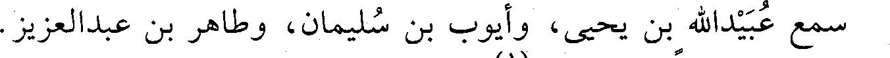
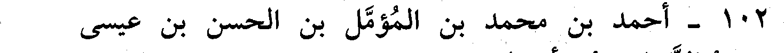
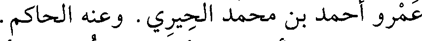
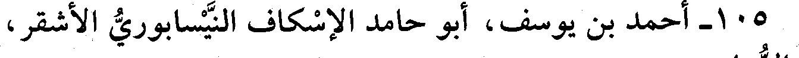
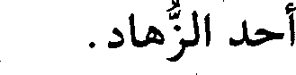
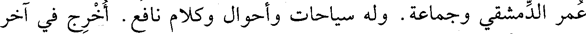
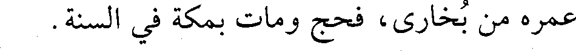

File: 001170.gt.txt (if the image is defective, simply delete all Arabic text and the line will be excluded)
كان له أتباع ومريدون، وعظ ببخارى فكثر جمعه، وخاف الحنفية من
File: 001171.gt.txt (if the image is defective, simply delete all Arabic text and the line will be excluded)
تغلبه عليهم. كان يحضر مجلسه نحو عشرة آلاف. كتب عنه أبو عبد الله
File: 001172.gt.txt (if the image is defective, simply delete all Arabic text and the line will be excluded)
الحاكم.
File: 001173.gt.txt (if the image is defective, simply delete all Arabic text and the line will be excluded)
101 - أحمد بن محمد بن فرحون، أبو القاسم الأندلسي.
File: 001174.gt.txt (if the image is defective, simply delete all Arabic text and the line will be excluded)

سمع عبيدالله بن يحيى، وأيوب بن سليمان، وطاهر بن عبدالعزيز.
File: 001175.gt.txt (if the image is defective, simply delete all Arabic text and the line will be excluded)
وحدث. وكان ضابطا، وفيه لين(1).
File: 001176.gt.txt (if the image is defective, simply delete all Arabic text and the line will be excluded)

102 - أحمد بن محمد بن المؤمل بن الحسن بن عيسى
File: 001177.gt.txt (if the image is defective, simply delete all Arabic text and the line will be excluded)
الماسرجسي النيسابوري، أبو الحسن.
File: 001178.gt.txt (if the image is defective, simply delete all Arabic text and the line will be excluded)
من بيت علم ورواية، وكان رجلا صالحا. روى عن جده، وأبي
File: 001179.gt.txt (if the image is defective, simply delete all Arabic text and the line will be excluded)

عمرو أحمد بن محمد الحيري. وعنه الحاكم.
File: 001180.gt.txt (if the image is defective, simply delete all Arabic text and the line will be excluded)
103 - أحمد بن مسلم بن شعيب، أبو العباس المديني الأديب.
File: 001181.gt.txt (if the image is defective, simply delete all Arabic text and the line will be excluded)
سمع علي بن سعيد العسكري، ومحمد بن جرير الطبري. وعنه ابن
File: 001182.gt.txt (if the image is defective, simply delete all Arabic text and the line will be excluded)
أبي علي، وأبو نعيم(2).
File: 001183.gt.txt (if the image is defective, simply delete all Arabic text and the line will be excluded)
104 - أحمد بن هلال بن زيد، أبو عمر الأندلسي العطار.
File: 001184.gt.txt (if the image is defective, simply delete all Arabic text and the line will be excluded)
رحل، وسمع من محمد بن الربيع الجيزي، وغيره. وكان حافظا
File: 001185.gt.txt (if the image is defective, simply delete all Arabic text and the line will be excluded)
للشروط، مفتيا عارفا بقول مالك(3).
File: 001186.gt.txt (if the image is defective, simply delete all Arabic text and the line will be excluded)

105 - أحمد بن يوسف، أبو حامد الإسكاف النيسابوري الأشقر،
File: 001187.gt.txt (if the image is defective, simply delete all Arabic text and the line will be excluded)

أحد الزهاد.
File: 001188.gt.txt (if the image is defective, simply delete all Arabic text and the line will be excluded)
صحب أبا عثمان الحيري، ورأى ابن عطاء، والجريري، وصحب أبا
File: 001189.gt.txt (if the image is defective, simply delete all Arabic text and the line will be excluded)

عمر الدمشقي وجماعة. وله سياحات وأحوال وكلام نافع. أخرج في آخر
File: 001190.gt.txt (if the image is defective, simply delete all Arabic text and the line will be excluded)

عمره من بخارى، فحج ومات بمكة في السنة.
File: 001191.gt.txt (if the image is defective, simply delete all Arabic text and the line will be excluded)
225
To Save: `Ctrl+s`, make sure to choose `Webpage, complete`!